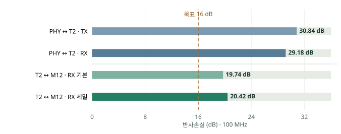

어디에서 통신이
약해지는가.
PCB부터 20 m 케이블까지.
PortA의 심볼 오류와 링크 끊김을 만드는
취약 구간과 수정 우선순위를 찾습니다.
이전에 만든 전체 기구 모델입니다. 케이블은 감아서 표시했고, PCB의 제조 Gerber 형상은 아래에서 확인할 수 있습니다.
실제 PCB 두 장과 통신 경로
실제 연결을 따라,
문제 후보를 나눕니다.
모터가 계속 도는 동안에도 PortA 링크가 끊깁니다.
PCB의 전송손실과 케이블·실드의 잡음 유입을 각각 확인합니다.
PCB · 보드 간 접속
신호가 잘 전달되는가?
분기부 · 20 m 케이블
쌍꼬임과 길이가 얼마나 영향을 주는가?
실드 · 접촉 · 접지
외부 잡음이 어디로 들어오는가?
제조 Gerber로 형상 구성트랜스 양쪽 PCB 선로를 분리
openEMS 초기 시뮬레이션PHY ↔ 트랜스의 TX / RX
FEM으로 격자 비교트랜스 ↔ M12의 RX
계산 범위와 모델 가정
보드는 두 장이며 각각 구리 4층입니다. 케이블측 FEM 계산에는 전체 Gerber 구리와 도금홀 788개가 포함됩니다. PHY측은 Control 보드에서 T2 PHY측 패드부터 LAN9354 패드까지 별도로 계산했습니다. 3D의 색은 신호 구분이며 전자기장 강도가 아닙니다.
Molex는 15 mm 길이의 직선 접점 64개로 근사했습니다. 실제 스프링·하우징, T2 내부, PHY 실리콘, M12 몸체, 실장 소자의 실제 동작, 외부 케이블과 잡음원은 PCB 구간 수치에서 제외됩니다. 구리는 완전도체, FR4는 εr=4.5의 무손실 재료입니다. 분리 보기는 표시 간격만 바꿉니다.
PHY측 수치는 초기 openEMS 결과이며 시간·공간 수렴 검증이 완료되지 않았습니다. 케이블측 수치는 NGSolve 주파수영역 FEM의 두 격자 비교 결과입니다. 두 결과의 검증 수준을 동일하게 취급하지 않습니다.
케이블측 해석 기록 ↗ · PHY측 해석 기록 ↗2~100 MHz 전 구간 · 100 Ω 차동 기준
기준보다 높으면,
반사가 충분히 작은 쪽.
주파수마다 기준을 바꾸지 않고
16 dB 수평선 하나로 비교합니다.
참고 출처 UNH-IOL · 100BASE-TX PMD 시험 25.2.1 ↗Microchip · LAN9354 배선 지침 ↗
공식 시험 기준과 내부 목표의 차이
UNH-IOL v3.5의 완성된 수신 포트 시험은 2~30 MHz에서 16 dB, 30~60 MHz에서 낮아지는 기준, 60~80 MHz에서 약 10 dB를 사용하며 85 Ω·115 Ω 조건으로 평가합니다.
여기서는 고주파 구간에서도 기준선을 낮추지 않고, 100 MHz까지 16 dB를 적용하는 프로젝트 목표를 정했습니다. 평가 대상은 100 Ω 기준의 PCB 수동 구간입니다. 공식 포트 시험의 합격 판정과는 구분합니다. Microchip의 해당 PHY 배선 지침은 100 Ω 차동 배선을 제시합니다.
이 지표는 반사 특성을 평가합니다. 다음 잡음 비교에서는 같은 입력에 대한 RX 차동 잡음(mV/V)과 개선 전후 잡음 감소량(dB)을 사용합니다.
확인한 PCB 양쪽 구간,
모두 16 dB 이상.
100 MHz 계산값 기준으로 목표를 상회합니다.
PHY측은 최소 +13.2 dB, 케이블측은 최소 +3.7 dB입니다.
트랜스 양쪽 PCB 배선을 같은 기준으로 비교
100 Ω 차동 · 100 MHz
20 dB는 무슨 뜻인가?
반사 전력이 입사 전력의 약 1%라는 뜻입니다. 패킷 손실률이나 고장 기여율이 아닙니다.
100 MHz의 PCB 구간 평가입니다. PHY측은 초기 해석값이며, 전 대역·제품 전체 합격을 표시한 것은 아닙니다.
구간별 검증 상태와 원본 결과
| 구간 | 100 MHz 반사손실 | 검증 상태 |
|---|---|---|
| LAN9354 ↔ T2 · TX | 30.84 dB | 초기 openEMS |
| LAN9354 ↔ T2 · RX | 29.18 dB | 초기 openEMS |
| T2 ↔ M12 · RX | 19.74 / 20.42 dB | FEM 두 격자 비교 |
PHY측은 40,000스텝 기록이며 −40 dB 에너지 종료 기준과 공간 격자 수렴을 확인하지 못했습니다. 도금 배럴 166개에 미사용 경고도 있었습니다. 약 29~31 dB는 해당 초기 모델의 명목 반사 특성으로 사용하며, 정밀 손실·EMC 내성·완료된 수렴값으로 취급하지 않습니다. 작은 음의 삽입손실은 실제 증폭이 아니라 수치오차로 남겼습니다.
케이블측 격자 변경에 따른 RL 차이는 0.687 dB로 설정한 0.5 dB 목표에는 미달합니다. IL 차이 0.0068 dB는 0.05 dB 목표를 충족합니다. 각 FEM 모델의 잔차·상호성·수동성·포트 전력 검증은 통과했으며, 경계·포트 조건 비교는 남아 있습니다.
두 구간은 트랜스 패드에서 분리해 계산했습니다. RL 값을 더하거나 트랜스 내부까지 검증한 것으로 합치지 않습니다. 케이블측 IL은 주로 반사에 따른 전달 감소이며, 실제 구리·유전체 흡수 손실은 제외됩니다.